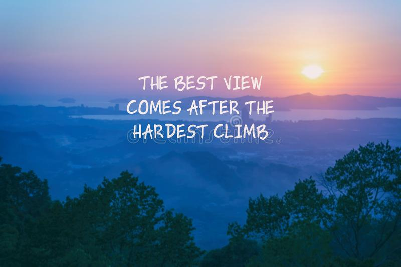

Whether you're having a rough day and need a pick-me-up to assure yourself
that it's all going to be OK, or whether you're just looking for a mission
statement for the day, these inspirational quotes will help you put one foot in
front of the other and make the small or sweeping changes that you desire. No matter if
it's a movie star, a thought leader, Beyoncé, or a 17th century writer, you're sure to find an
inspirational quote that speaks to your drive and determination. Here are the best
inspirational quotes for you!
100 Inspirational Quotes
- "When you have a dream, you've got to grab it and never let go."
— Carol Burnett
- "Nothing is impossible. The word itself says 'I'm possible!'
— Audrey Hepburn
- "There is nothing impossible to they who will try."
— Alexander the Great
- "The bad news is time flies. The good news is you're the pilot."
— Michael Altshuler
- "Life has got all those twists and turns. You've got to hold on tight and off you go."
— Nicole Kidman
- "Keep your face always toward the sunshine, and shadows will fall behind you."
— Walt Whitman
- "Be courageous. Challenge orthodoxy. Stand up for what you believe in.
When you are in your rocking chair talking to your grandchildren many
years from now, be sure you have a good story to tell."
— Amal Clooney